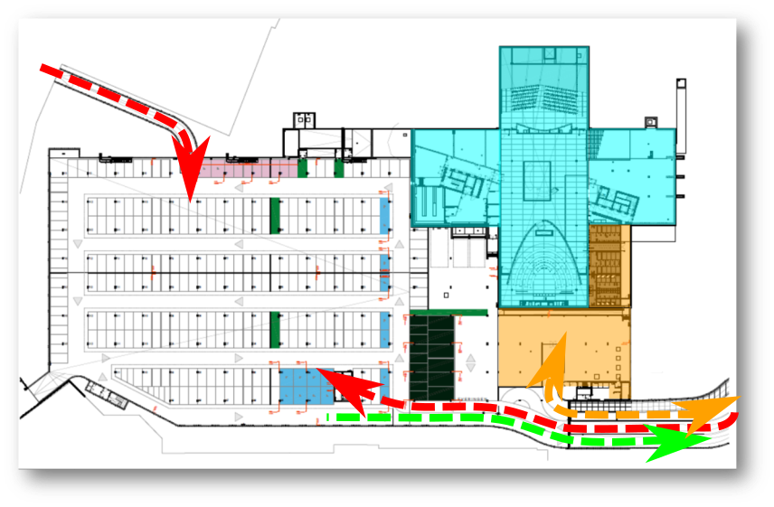

Het provinciehuis heeft een ondergrondse parkeergarage met plaats voor 400 fietsen, 8 motors en 335 auto's (waarvan minstens 7 plaatsen voor personen met een beperking). Ook onze leveranciers gebruiken de parking, zij leveren bij voorkeur niet bovengronds.
Op het plannetje zie je
rechtsboven (het blauwe kruis) het torengebouw.
De gele zone is bestemd voor de fietsers. Hier vind je de stalling, de omkleedruimtes en douches, lockers en een droogruimte. [[Meer voor fietsers|Klik door]] voor meer fietsinfo.
Met de auto kan je op twee manieren toegang krijgen tot de ondergrondse parking: vanuit de Harmoniestraat (de rode pijl linksboven op het plannetje) en vanuit de Koningin Elisabethlei (de rode pijl rechtsonder). Uitrijden doe je enkel via de Koningin Elisabethlei (de groen pijl onderaan).
Voor de fietsers onder ons is er een comfortabele helling voorzien aan de kant Koningin Elisabethlei (zie de gele pijl).
De ondergrondse parking gebruiken we als personeelsparking, maar ook als parking voor de dienstwagens en als bezoekersparking. 's Nachts en in het weekend verhuren we plaatsen aan buurtbewoners. Sommige plaatsen zijn duidelijk gemarkeerd en gereserveerd (dienstwagens, mensen met een beperking, ...).
Voor personeelsleden zijn er een 170-tal gewone parkeerplaatsen. Collega's met een beperking gebruiken daarnaast één van de 7 blauwe plaatsen.
Een aantal (ruime) plaatsen in de ondergrondse parking is gereserveerd voor motorrijders.
Voor dienstwagens (poolwagens en gedeputeerden) zijn er 30 plaatsen.
We laten 30 bezoekers toe tot de ondergrondse parking. Op sommige dagen breiden we dat uit tot 50 plaatsen, bijvoorbeeld voor de omgevingsberoepen of wanneer de provincieraad plaatsvindt.
In het provinciehuis worden ook af en toe congressen georganiseerd. Organisatoren kunnen per dag per congres maximaal 25 plaatsen afhuren. Zijn er meerdere evenementen tegelijk, dan beperken we dat soort plaatsen tot maximaal 50. Wanneer er geen congressen plaatsvinden, zijn die plaatsen extra ter beschikking van het personeel.
Er zijn een 400-tal plaatsen voor
fietsen. De fietsenstalling vind je op het plannetje rechtsonder, vlakbij de toegangshelling.
De parkeergarage is niet toegankelijk voor auto's met LPG en voor aanhangwagens. Wagens met CNG hebben wel toegang.
Kom je met de fiets werken, dan heb je altijd toegang tot de ondergrondse stalling.
Dat is niet het geval als je met de auto komt. Net zoals in het verleden mag niet iedereen zomaar gebruik maken van de personeelsparking: je moet minstens 5 kilometer (in vogelvlucht) van het provinciehuis wonen.
Een jaarabonnement op het openbaar vervoer is niet compatibel met een parkeerplaats. Je moet dus kiezen.
Doe je aan carpoolen, dan krijg je een parkeergarantie. Voor alle andere collega's geldt dat je maar binnen wordt gelaten voor zover er nog plaats is.
De toegang moet je aanvragen. We onderzoeken dan of je beantwoordt aan de voorwaarden.
De dienst Mobiliteit zal daarbij bekijken of de auto voor jou het meest optimale transportmiddel is. Zij hebben namelijk vastgesteld dat bijna 30% van de parkinggebruikers sneller op het werk is met de fiets of het openbaar vervoer. Bij wijze van dienstverlening krijg je daarom een individueel reisadvies aangeboden. Je beslist zelf of je dat opvolgt of niet.
Bij sporadisch gebruik van je auto kun je toelating aanvragen om af en toe te parkeren.
Die toegangen vraag je eenmaal per jaar aan. Daarna kun je de personeelsparking zonder formaliteiten 15 keer gebruiken. In die regeling staan we geen afwijkingen toe. Je kan dus geen gebruik maken van de schoolvakantieregeling, waarbij een hele week toegang telt voor 1.
Je departementshoofd vraagt deze toegangen eenmaal per jaar aan. Daarna kun je de personeelsparking zonder formaliteiten 30 keer gebruiken.
Het aantal aanvragen is beperkt tot 15 keer per jaar, zonder parkeergarantie (vol is vol). Tijdens de schoolvakanties geldt een uitzonderingsregel: je krijgt dan een hele week toegang, terwijl er slechts één dag van je saldo gaat.
Bij positieve beslissing wordt je badge geprogrammeerd zodat je toegang tot de parking krijgt. De dag van je verplaatsing: gaan de slagbomen open, dan heb je parkeerplaats. Blijven ze gesloten, dan is de parking vol en zoek je parkeerplaats in de buurt.
Bezoekers die een parkeerplaats wensen, moet je vooraf aanmelden. Dat is belangrijk, omdat het aantal bezoekersplaatsen beperkt is. Vraag op voorhand een e-mailadres op. Dat kan je opgeven bij de aanvraag. Wij sturen je bezoeker dan een e-mail met een QR-code. Die code geeft je bezoeker automatisch toegang op de aangemelde dag.
We doen ons best om onaangekondigde bezoekers verder te helpen. In de praktijk zullen we hen echter meestal vriendelijk moeten verzoeken om een plaatsje te zoeken op de openbare weg.
Buurtbewoners mogen gebruik maken van de parkeergarage tussen 6 uur 's avonds en half 8 's morgens. Tijdens het weekend of op feestdagen mogen zij hun auto de hele dag laten staan.
De provincie stelt 30 plaatsen ter beschikking aan GAPA, het gemeentelijk parkeerbedrijf van Antwerpen. Zij verzorgen de contacten met deze gebruikers, en ze kijken ook streng toe of er geen misbruik wordt gemaakt.
Personeelsleden krijgen toegang met hun prikkaart. Je gebruikt je badge bij het binnenrijden, maar ook om buiten te rijden. Zo weten we altijd hoeveel plaatsen er nog beschikbaar zijn.
Je krijgt uiteraard maar toegang als er nog ruimte is. Zijn alle plaatsen ingenomen, dan zul je op de openbare weg moeten parkeren.
Je kaart wordt geschikt gemaakt voor de parkingtoegang nadat je een aanvraag hebt gedaan (en die is goedgekeurd).
Motorrijders en fietsers kunnen binnenrijden zonder gebruik te maken van hun toegangskaart. Er is voldoende ruimte naast de slagboom.
Provincieraadsleden en
buurtbewoners die een contract met GAPA hebben afgesloten krijgen ook een toegangsbadge.
Op voorhand aangemelde
bezoekers krijgen van ons een e-mail met daarin een QR-code. Bij de ingang van de parking kunnen zij die code scannen. Ze krijgen dan onmiddellijk toegang.
Niet-aangekondigde bezoekers kunnen via een parlofoon toegang vragen. Meestal zullen we hen vriendelijk verzoeken om elders te parkeren. Indien mogelijk laten we ze toch toe.
12 parkeerplaatsen voor dienstvoertuigen beschikken over een laadpaal voor elektriciteit.
Daarnaast zijn er 12 parkeerplaatsen voor personeelsleden en bezoekers van waaruit je een laadpaal kan bereiken. Die laadpalen kan je gebruiken als je beschikt over een abonnement bij een van de providers op de markt.
Op deze bladzijde
Verwante pagina's
Intranet
Vragen?